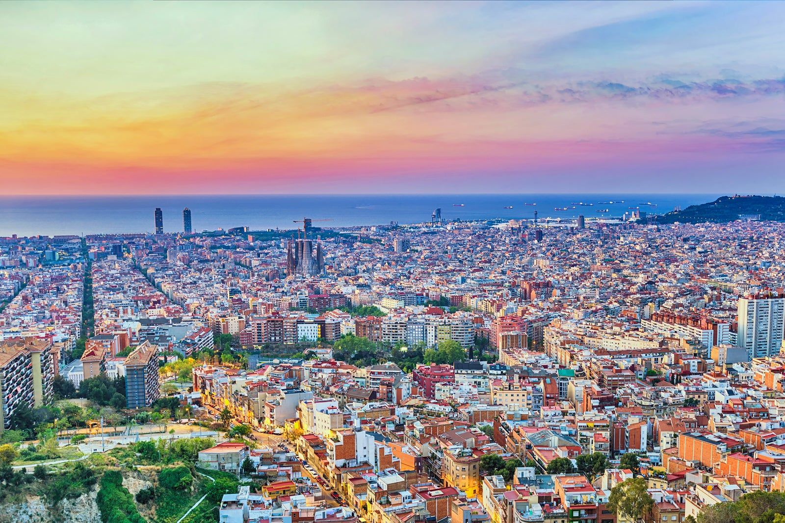

Bunkers del Carmel
Kein Gaudí, kein Museum, kein Eintritt – nur eine kahle Betonplattform auf einem Hügel. Und trotzdem einer der Orte, an die sich Besucher am längsten erinnern, wegen dem, was man von hier oben sieht: ganz Barcelona, von den Bergen bis zum Meer, mit der Sagrada Família mittendrin.

Geschichte
1937, mitten im Spanischen Bürgerkrieg, wurden hier auf dem Turó de la Rovira Flugabwehrgeschütze installiert, um Barcelona vor Luftangriffen zu schützen. Nach dem Krieg entstand rund um die Ruinen eine informelle Siedlung für arme Zuwanderer, die erst in den 1990er-Jahren aufgelöst wurde. Die Bunker selbst lagen jahrzehntelang vergessen da, bis 2011 mit der Restaurierung begonnen wurde.
Warum besonders
Der 360-Grad-Blick über die ganze Stadt gilt als einer der besten in Barcelona – gerade weil der Ort touristisch noch nicht überlaufen ist wie die klassischen Aussichtspunkte. Zum Sonnenuntergang treffen sich hier vor allem Locals mit Bier und Gitarre, nicht Reisebusse.
Praktische Hinweise
Erreichbar zu Fuß aus Gràcia durchs Coll-Viertel (Carrer de la Mare de Déu del Coll), ca. 30–35 Min. bergauf, oder mit dem Bus 119 näher heran. Keine Beleuchtung, keine Geländer – nach Sonnenuntergang mit Handylicht den Rückweg antreten. Am 31.08. geht die Sonne gegen 20:28 Uhr unter.